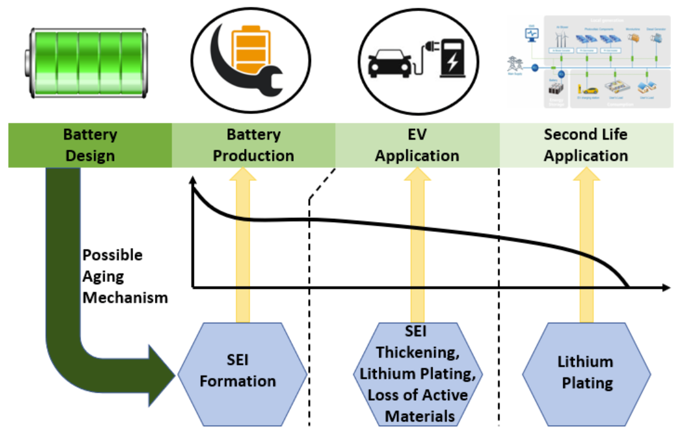
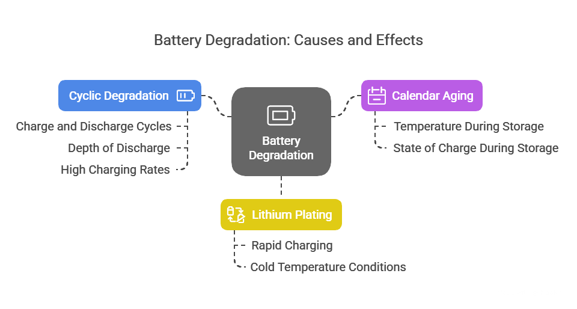
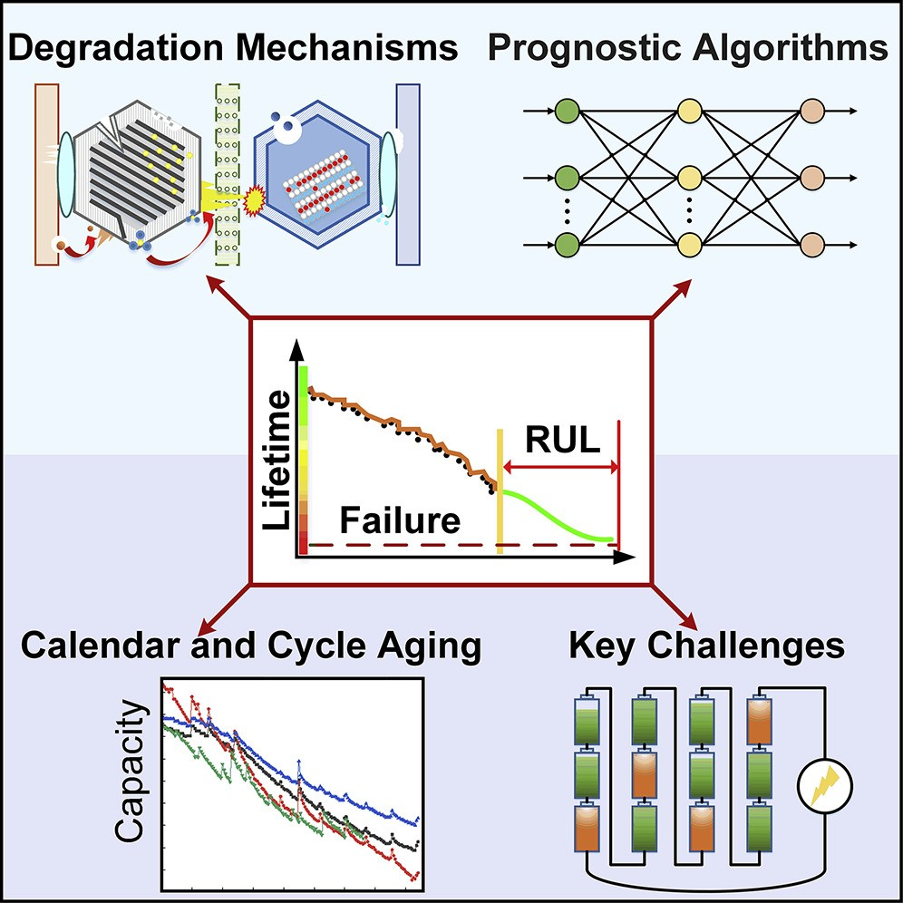
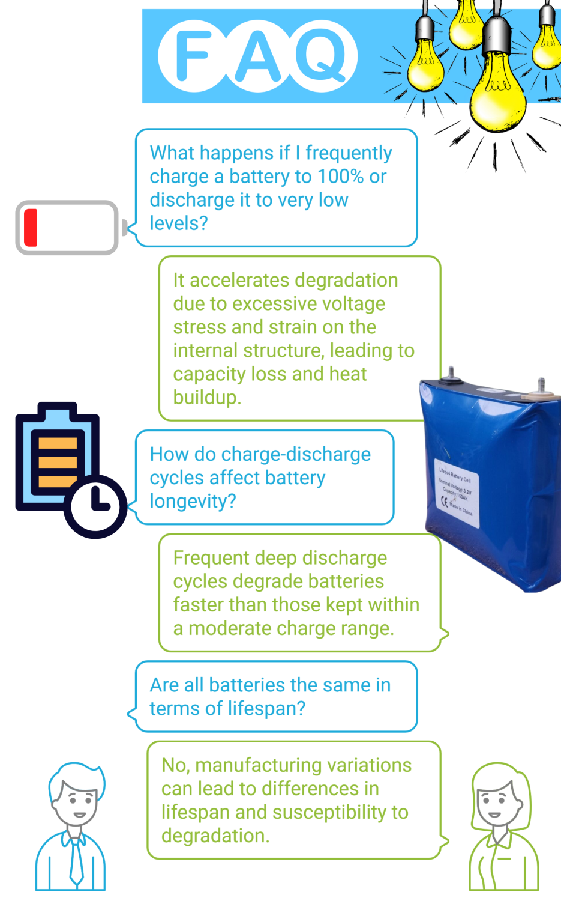
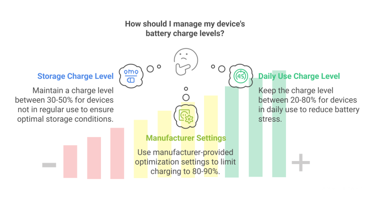
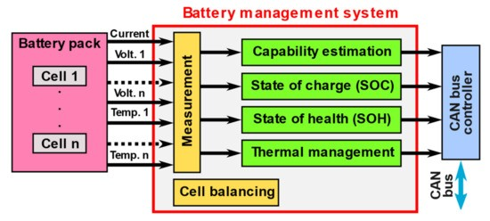

Battery degradation is a critical challenge facing users of everything from smartphones to electric vehicles. As our reliance on battery-powered devices continues to grow, understanding how batteries degrade and implementing strategies to extend their lifespan becomes increasingly important. This degradation process affects performance, capacity, and ultimately the usability of our devices, making it essential for consumers and industry professionals alike to understand its underlying mechanisms.
This guide aims to demystify lithium-ion (Li-ion) battery degradation – the type found in most consumer electronics and EVs – explaining what it is, what causes it, and providing practical, evidence-based tips to help keep batteries performing well for longer. Making devices last longer not only saves money but also reduces the environmental impact associated with manufacturing new batteries.
Decoding Battery Degradation: What Does "Aging" Mean?
Battery degradation refers to the gradual decline in a battery's ability to store and deliver energy over time. This inevitable process results in reduced energy capacity, decreased range (in electric vehicles), diminished power output, and overall efficiency loss in devices. While lithium-ion batteries, the most common type today, are designed to last for years, they will unavoidably experience some level of degradation throughout their service life.

The degradation process varies significantly between batteries based on multiple factors, including the battery's chemical composition, manufacturing quality, and how the device is used and maintained. For electric vehicles specifically, battery packs are generally designed to last the lifetime of the vehicle, but their energy storage capacity will gradually diminish over time3. This variance in degradation rates means that understanding the underlying causes is crucial for maximizing battery performance.
Why Battery Health Matters
Battery degradation is particularly important for manufacturers, energy providers, grid operators, and individual device owners. All these stakeholders depend on reliable energy storage for consistent power delivery, renewable energy integration, and grid stabilization1. The economic implications are also significant, as the cost of lithium-ion batteries can range from 5% to over 50% of a product's total cost. Additionally, extending battery life has positive environmental impacts by reducing the need for replacement batteries, thus decreasing greenhouse gas emissions and other pollutants associated with battery production.
Primary Causes of Battery Degradation

Cyclic Degradation
Every charge and discharge cycle incrementally reduces a battery's capacity. During each cycle, the battery's internal structure experiences small changes that accumulate over time1. The depth of discharge significantly impacts this process - the deeper the discharge, the greater the stress placed on the battery. High charging rates and frequent usage accelerate this wear, leading to more rapid capacity reduction and performance decline.
Calendar Aging
Even when batteries sit unused, they experience degradation through a process known as calendar aging. This gradual loss of capacity occurs due to slow internal chemical reactions that continue regardless of usage patterns. Calendar aging is heavily influenced by two primary factors: the temperature at which the battery is stored and its state of charge during storage. Batteries kept at high charge states (near 100%) and in warmer environments experience accelerated aging effects.
Lithium Plating
During rapid charging or discharging cycles, lithium ions may plate onto the anode instead of properly intercalating into the anode material as designed. This phenomenon, known as lithium plating, results in the growth of lithium metal on the anode surface, which progressively reduces the battery's overall capacity and performance. This issue is particularly common during fast-charging sessions and in cold temperature conditions.

Environmental Factors
Temperature Effects
Temperature represents one of the most significant external factors affecting battery health. Extreme temperatures—both high and low—can substantially harm battery performance and longevity:
- High temperatures accelerate the chemical reactions that degrade battery components, potentially leading to significant safety risks, including fire or explosion. If a device becomes noticeably hot during charging, it should be unplugged immediately.
- Low temperatures hinder a battery's ability to charge and discharge efficiently, with charging in cold conditions being particularly detrimental to battery health.
For electric vehicles specifically, temperature management is crucial, with most manufacturers including thermal management systems to protect the battery pack.
Usage Patterns

Overcharging and Deep Discharge
Frequently charging a battery to 100% (overcharging) or discharging it to very low levels (close to 0%) can significantly accelerate degradation. Overcharging creates excessive voltage that stresses the battery, while deep discharges place additional strain on the internal structure, both leading to capacity loss and potentially dangerous heat buildup.
Depth of Discharge and Cycling Frequency
The number of charge- discharge cycles a battery experiences throughout its life, along with how deeply it's discharged each time, significantly impacts its longevity. Batteries that frequently undergo deep discharge cycles (using most of their capacity before recharging) typically degrade faster than those maintained within a moderate charge range.
Manufacturing Variables
Not all batteries are created equal. Variations in manufacturing processes can result in some batteries having inherently shorter lifespans or being more susceptible to degradation from the start. These manufacturing differences can affect internal components, chemical composition, and structural integrity, all of which influence how quickly degradation occurs.
Effective Prevention Strategies
Optimizing Charging Habits
Avoid Extreme Charge States
To maximize battery life, avoid keeping batteries at either 100% charge or allowing them to discharge completely. Instead:
- For devices not in regular use, maintaining a charge level between 30-50% is generally recommended for storage.
- For devices in daily use, try to keep the charge level between 20% and 80% most of the time to reduce stress on the battery.
- Use manufacturer-provided battery optimization settings when available, as these often limit charging to 80-90% for daily use.

Charging Speed and Frequency
While fast charging is convenient, it can accelerate degradation. Consider using slower charging methods when time allows, especially overnight. Additionally, frequent small "top-up" charges are generally better for battery health than allowing the battery to drain significantly before recharging.
Temperature Management
Avoid Heat Exposure
Keep devices away from heat sources and direct sunlight, particularly while charging. If a device becomes hot during charging, disconnect it immediately to prevent damage. For optimal battery health, operate and store devices in moderate temperature environments (approximately 20-25°C or 68-77°F).
Cold Weather Considerations
In cold conditions, allow devices to warm to room temperature before charging. Avoid leaving battery-powered devices in extremely cold environments for extended periods, as this can significantly impact their charging ability and overall performance.
Storage Best Practices
When storing a battery-powered device for an extended period:
- Charge the battery to approximately 30-50% before storage.
- Store the device in a cool, dry place away from direct sunlight.
- Periodically check and recharge the battery every few months to prevent it from discharging completely.
- Avoid storing batteries at full charge, as this accelerates calendar aging.
Leveraging Technology Solutions
Modern technology offers several approaches to battery health management:
- Advanced battery management systems monitor and optimize charging patterns to minimize stress on battery cells.
- Smart chargers automatically adjust charging parameters based on battery condition.
- Some devices include built-in battery health diagnostics that can alert users to potential issues.
- Aftermarket battery monitoring apps can provide insights into battery health and usage patterns.

The Future of Battery Longevity
While battery degradation cannot be eliminated entirely, ongoing research and technological advancements continue to improve battery durability and performance. Manufacturers are constantly working to develop:
- Better electrode materials that resist degradation
- More sophisticated battery management systems
- Enhanced charging algorithms that minimize battery stress
- Improved thermal management technologies
- Next-generation battery chemistries with inherently longer lifespans
These innovations promise to extend battery life even further, making our electronic devices more reliable and sustainable.
Conclusion
Understanding battery degradation is essential for maximizing the performance and lifespan of our increasingly battery-dependent devices. By implementing proper charging habits, managing temperature exposure, and following optimal storage practices, users can significantly extend their batteries' useful life.
The benefits of proper battery management extend beyond just convenience and cost savings. Extending battery life reduces electronic waste and lessens the environmental impact of battery production. As battery technology continues to evolve, combining good usage habits with advancing battery management technologies will help ensure that our devices remain reliable and efficient throughout their intended lifespan.
By taking proactive steps to prevent battery degradation, we can all contribute to more sustainable technology use while enjoying better performance from our battery-powered devices.